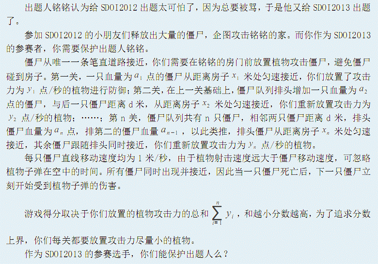

第一行两个空格隔开的正整数n和d，分别表示关数和相邻僵尸间的距离。接下来n行每行两个空格隔开的正整数，第i + 1行为Ai和 Xi，分别表示相比上一关在僵尸队列排头增加血量为Ai 点的僵尸，排头僵尸从距离房子Xi米处开始接近。

第一行两个空格隔开的正整数n和d，分别表示关数和相邻僵尸间的距离。接下来n行每行两个空格隔开的正整数，第i + 1行为Ai和 Xi，分别表示相比上一关在僵尸队列排头增加血量为Ai 点的僵尸，排头僵尸从距离房子Xi米处开始接近。
一个数，n关植物攻击力的最小总和 ，保留到整数。
5 2
3 3
1 1
10 8
4 8
2 3
7第一关：距离房子3米处有一只血量3点的僵尸，植物最小攻击力为1.00000； 第二关：距离房子1米处有一只血量1点的僵尸、3米处有血量3点的僵尸，植物最小攻击力为1.33333； 第三关：距离房子8米处有一只血量10点的僵尸、10米处有血量1点的僵尸、12米处有血量3点的僵尸，植物最小攻击力为1.25000； 第四关：距离房子8米处有一只血量4点的僵尸、10米处有血量10点的僵尸、12米处有血量1点的僵尸、14米处有血量3点的僵尸，植物最小攻击力为1.40000； 第五关：距离房子3米处有一只血量2点的僵尸、5米处有血量4点的僵尸、7米处有 血量10点的僵尸、9米处有血量1点的僵尸、11米处有血量3点的僵尸，植物最小攻击力 为2.28571。 植物攻击力的最小总和为7.26905。
对于100%的数据， 1≤n≤10^5，1≤d≤10^12,1≤x≤ 10^12,1≤a≤10^12